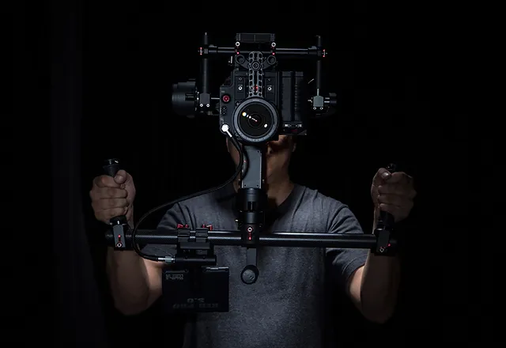

Kameran Buradan

Görsel hikayeler anlatmanın gücü, sadece doğru ekipmanla mümkündür. Kameran Buradan olarak,
fotoğrafçılık tutkunuzu bir üst seviyeye taşıyacak en son teknolojiyle donatılmış kameralar
ve aksesuarlar sunuyoruz. İster profesyonel bir fotoğrafçı olun, ister hobi olarak fotoğrafçılıkla
ilgilenin, geniş ürün yelpazemizle her seviyeye hitap ediyoruz.
Neden Biz?
- En Yeni Teknoloji: Piyasadaki en son kamera modelleri,
yüksek çözünürlüklü sensörler
ve gelişmiş optiklerle donatılmıştır. - Uzman Ekip: Ürünlerimiz hakkında bilgi vermekten,
ihtiyaçlarınıza en uygun çözümleri sunmaya
kadar her adımda yanınızdayız. - Geniş Ürün Yelpazesi: DSLR, aynasız, kompakt kameralar,
lensler, tripotlar ve diğer aksesuarlar.
Her ihtiyacınıza uygun ürünlerimiz var. - Güvenilirlik ve Dayanıklılık: Satışını yaptığımız her kamera
ve aksesuar, en yüksek kalite
standartlarına uygundur ve uzun yıllar performans sunar. - Müşteri Memnuniyeti: Müşteri memnuniyeti
bizim için en öncelikli konudur. Satış sonrası
hizmetlerimizle her zaman yanınızdayız.